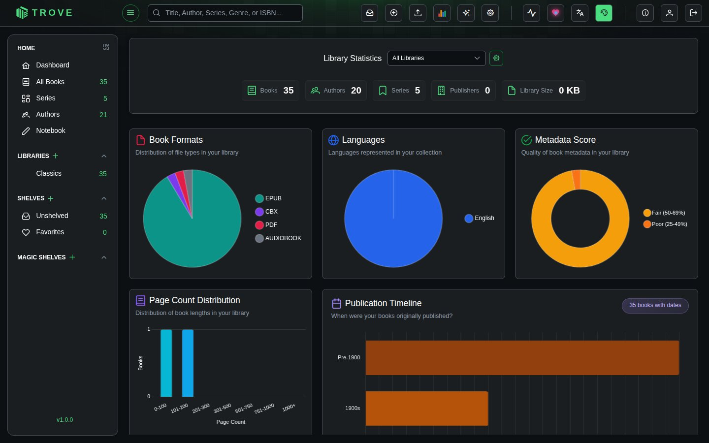
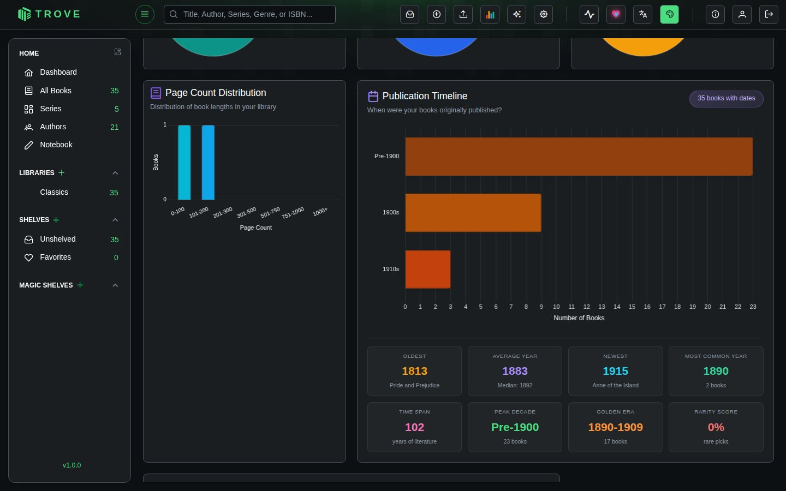

Library statistics
Library Statistics provides a visual overview of your collection through interactive charts. Access it from the stats button in the top bar.
Overview

The top section shows summary counts for your collection: total Books, Authors, Series, Publishers, and Library Size.
A library filter dropdown lets you scope all charts to a specific library or view stats across all libraries.
Charts
Nine chart types are available. Each chart includes hover tooltips and contextual insights (peak values, averages, trends).

| Chart | Type | What it shows |
|---|---|---|
| Book Formats | Pie | Distribution of file formats (EPUB, PDF, CBX, MOBI, FB2, Audiobook, etc.) |
| Languages | Pie | Languages represented in your collection |
| Metadata Score | Doughnut | Quality of book metadata rated from Excellent to Very Poor |
| Page Count Distribution | Bar | Books grouped by page ranges (0-100, 101-200, up to 1000+) |
| Publication Timeline | Horizontal Bar | Books grouped by decade (Pre-1900 through 2020s) |
| Publication Trend | Line | Number of books published per year |
| Reading Journey | Line | Cumulative books added vs books finished over time |
| Top Items | Stacked Bar | Top 15 by count with read status breakdown. Switchable between Authors, Categories, Series, Publishers, Tags, and Moods |
| Author Universe | Bubble | Authors plotted by book count (x-axis) and average rating (y-axis). Bubble size represents total pages, color indicates completion percentage |
Choosing the charts
Click the settings button in the header to open Chart Configuration. Tick the charts you want, grouped by size (small, large, extra large), or use Enable All, Disable All and Reset Order. On the page, drag a chart by its handle to move it. The Top Items chart has its own menu to switch between authors, categories, series, publishers, tags and moods. Your layout is saved for your account.